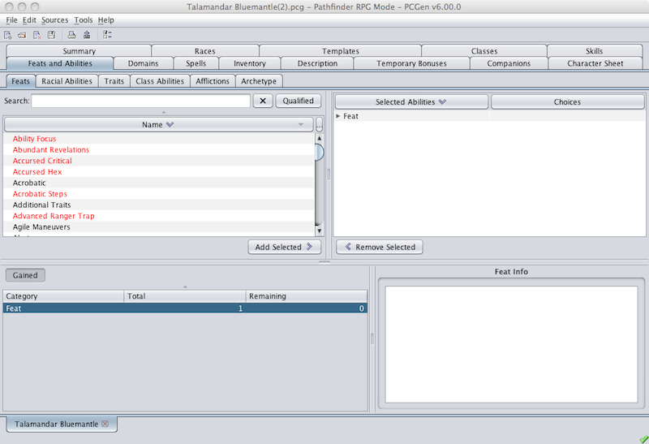

This is the Feats and Abilities tab. Here the user will choose which feats and abilities, to add to the character.

The Feats and Abilities tab has a number of additional subtabs, starting with the Feats subtab. These subtabs, each representing a different category of abilities, will depend on the data sets loaded. Examples of some other categories of abilities you will see in PCGen's distributed data sets include Racial Abilities , Racial Traits , Class Abilities , and many more, and all panes have the same four panes.
Next to the word "Available" is a selection box that lets the user pick which "view" to use. It is this view, which will be used to determine the structure of the table below it. The same is true for the "Selected" feats, which list the feats already selected for the PC.
By default the feats and abilities for the PC selected as optional feats and abilities are shown in black text in the table. Feats and abilities gained automatically (due to a race or class ability or trait) are displayed in dark-yellow text. Feats and abilities gained virtually (typically this means there's some restriction on them) are displayed in magenta text. Virtual or Automatic feats and abilities cannot be removed. Nor can the selections of Virtual or Automatic feats and abilities be changed.
To add a feat or ability to your character you click on it and then you click on the Add Selected > button. You can also add an the desired item by double-clicking on it. Similarly, to remove a feat or ability, or to alter the internal selections of feats and abilities with such options, e.g. Weapon Focus (Longsword) , you double-clicking on it in the right pane. You can also select it in the right pane and then clicking on the < Remove Selected beneath the pane. As elsewhere in PCGen anything that is not qualified for is in red italics.
The info-pane in the bottom-right pane will display details about any feat clicked upon, including any prerequisites and its source.